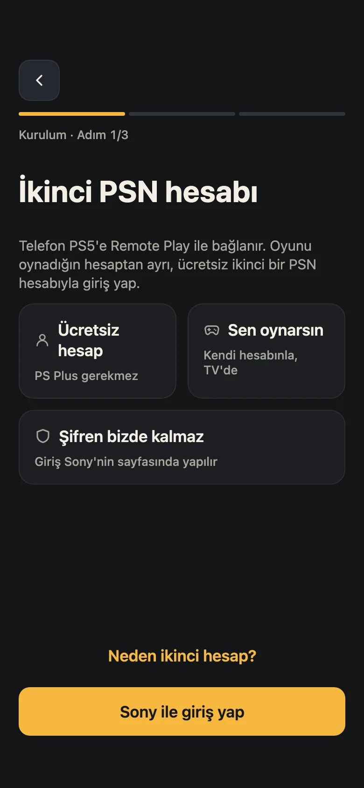
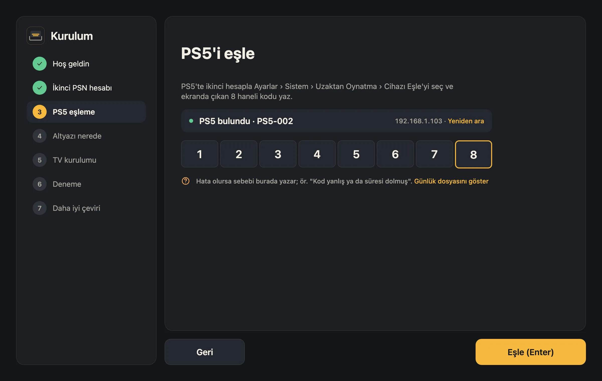
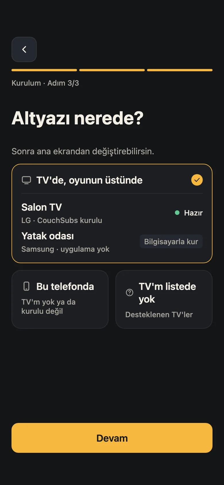
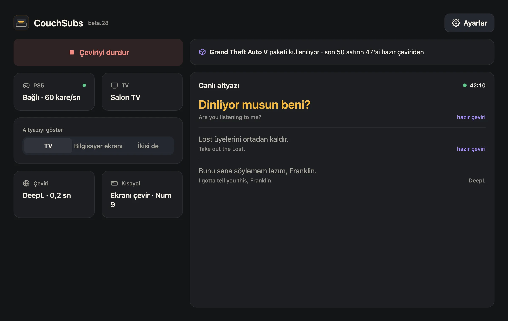
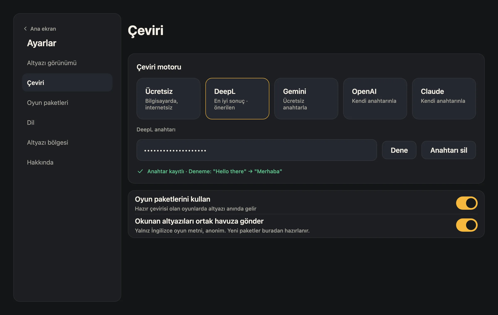
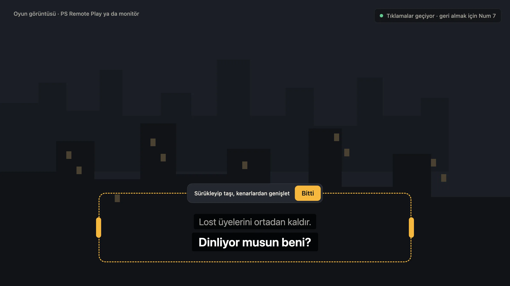
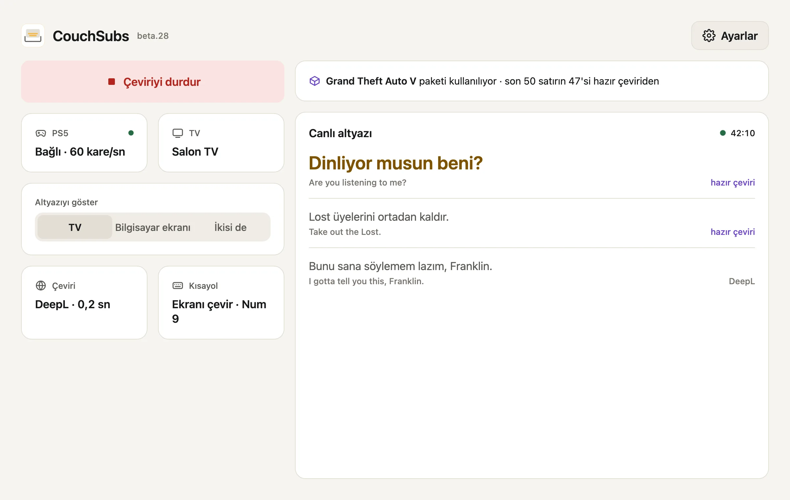
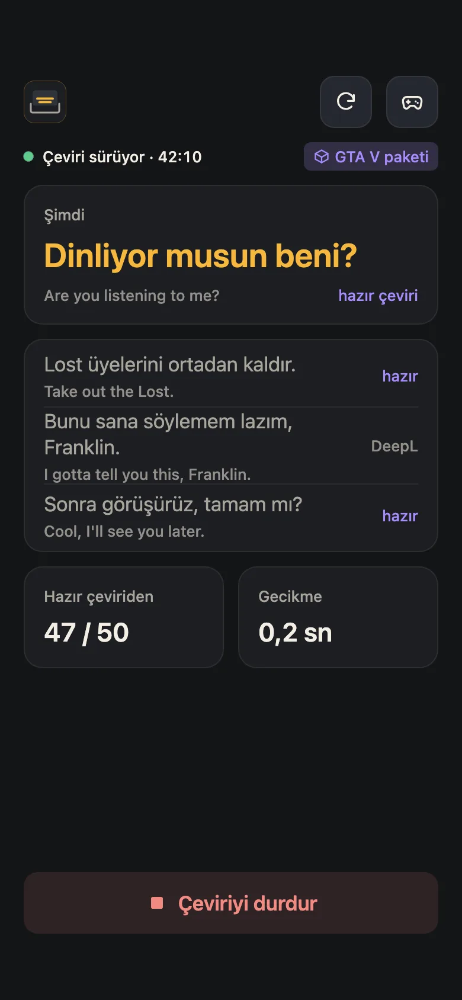
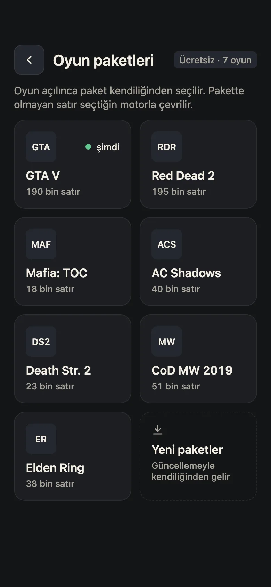

PS5 oyunlarına Türkçe yama.
Türkçe dil desteği olmayan oyunlarda CouchSubs İngilizce altyazıyı okur, Türkçeye çevirir ve TV'nde oyunun üstünde gösterir. Oyuna bir şey kurmadan, ücretsiz, hesap istemeden.
macOS 13 ve üstü, Windows 10 ve 11. TV'ler: LG, Samsung, Android TV.
Önce okur.
Bilgisayarın PS5'e Uzaktan Oynatma ile bağlanır ve altyazı satırını görüntüden okur. Oyuna da konsola da hiçbir şey kurulmaz.
Sonra Türkçe yazar.
Çeviri, oyun akarken TV'ne gelir. Hazır yaması olan oyunlarda satır beklemeden çıkar; diğerlerinde ücretsiz motor ya da kendi anahtarınla Gemini, DeepL çevirir.
Kurulum rehberi
Bir kez kurarsın, on dakika sürer. Sonra oyunu açınca CouchSubs kendiliğinden çevirmeye başlar. Uygulamadaki kurulum da aynı adımları izler.
İndir ve aç
- Mac: DMG'yi aç, CouchSubs'ı Uygulamalar klasörüne sürükle ve aç. Uygulama Apple onaylıdır.
- Windows: Setup.exe'yi aç; yönetici izni istemeden kurulur. "Windows bilgisayarınızı korudu" uyarısı çıkarsa Ek bilgi › Yine de çalıştır'a bas.
- Güvenlik duvarı sorarsa Özel ağlar'a izin ver; TV ve PS5 ile ev ağında konuşur.
- PS5, TV ve bilgisayar aynı ev ağında olmalı.

İkinci bir PSN hesabıyla gir
- Ücretsiz ikinci bir PlayStation Network hesabı aç. Kendi hesabınla girersen Uzaktan Oynatma senin kolunu kapatır; ikinci hesapla oyunun kesilmez.
- Bu hesapla PS5'te bir kez oturum aç (PS5'e yeni kullanıcı olarak ekle).
- CouchSubs'ta PSN ile giriş'e bas ve ikinci hesapla giriş yap. Hesap kimliği elle de girilebilir.

PS5'i eşle
- CouchSubs ev ağındaki PS5'i kendisi bulur.
- PS5'te ikinci hesapla Ayarlar › Sistem › Uzaktan Oynatma › Cihazı Eşle'yi seç.
- Ekranda çıkan 8 haneli kodu CouchSubs'a yaz ve Eşle'ye bas. "PS5 eşleşti" görünce sonraki adıma geçer.
- Hata olursa sebebi aynı ekranda yazar, ör. "Kod yanlış ya da süresi dolmuş".

Altyazı nerede görünsün?
- TV'de, oyunun üstünde: en rahatı. Altyazı TV'deki CouchSubs uygulamasında, oyun görüntüsünün üstünde çıkar.
- Bilgisayar ekranında: oyunu bilgisayarda ya da monitörde oynuyorsan altyazı penceresi oyunun üstünde durur.
- İkisi de seçilebilir. Bunu sonra ana ekrandan değiştirirsin.
TV uygulamasını kur
TV uygulamasını CouchSubs ağ üzerinden kendisi kurar. Senin yapacağın tek şey TV'de geliştirici modunu bir kez açmak; uygulama TV'nin markasına göre yolu gösterir.
LG
- webostv.developer.lge.com'da ücretsiz LG geliştirici hesabı aç.
- TV'de LG Content Store'dan Developer Mode uygulamasını kur, hesabınla gir, Dev Mode Status'u aç.
- CouchSubs'ta TV'ni seçip Bağlan'a bas, TV'deki izni onayla.
- Developer Mode'da Key Server'ı aç; ekrandaki 6 karakterli parolayı CouchSubs'a yaz.
Samsung
- TV'de Uygulamalar ekranında kumandayla 1 2 3 4 5'e bas, Developer mode'u aç.
- Host PC IP'ye CouchSubs'ın gösterdiği adresi yaz.
- TV'yi güç tuşuna 2 saniye basılı tutarak yeniden başlat.
- CouchSubs'ta Bağlan'a bas; açılan sayfada bir kez Samsung hesabınla gir.
Android TV, Google TV
- Ayarlar › Cihaz Tercihleri › Hakkında'da Yapı numarasına 7 kez bas.
- Geliştirici seçenekleri'nden USB hata ayıklamayı (varsa ağ hata ayıklamayı da) aç.
- CouchSubs'ta Android TV'yi seç.
- TV'de "hata ayıklamaya izin verilsin mi?" sorusunda Her zaman izin ver'i işaretleyip İzin ver'e bas.

Oyunu aç, çeviriyi başlat
- Oyunda altyazıyı aç. CouchSubs yalnız ekranda yazan altyazıyı okuyabilir.
- CouchSubs'ta Çeviriyi başlat'a bas. PS5 ve TV yeşil görünür, satırlar akmaya başlar.
- Altyazı okunmuyorsa Ayarlar › Altyazı alanı'ndan alanı oyuna göre ayarla.
- Kısayollar: Windows'ta Num 9 ekranı çevirir, Num 0 duraklatır. Mac'te ekranı çevir ⌥⌘T.

İstersen daha iyi çeviri
- Ücretsiz motor kutudan çıktığı gibi çalışır. Hazır yaması olan oyunlarda satırlar zaten paketten gelir.
- Gemini: Google'dan ücretsiz bir anahtar alıp Ayarlar › Çeviri'ye yapıştır; daha doğal çeviri.
- DeepL ya da kendi yapay zekâ anahtarın da olur.
- Yerel yapay zekâ: Ollama ya da LM Studio ile çeviri bilgisayarında yapılır; anahtar ve kota yok.
Sade bir uygulama, karanlık odaya göre.
Mac ve Windows'ta aynı ekranlar. Koyu görünüm varsayılan; istersen açık görünüme geçersin.


Canlı altyazı: Türkçesi büyük, İngilizce aslı altında.


Telefon sürümü üzerinde çalışıyoruz, yakında geliyor.
Bu oyunların Türkçe yaması hazır.
- Grand Theft Auto V
- Red Dead Redemption 2
- Elden Ring
- Mafia: The Old Country
- Assassin's Creed Shadows
- Death Stranding 2
- Death Stranding Director's Cut
- Marvel's Spider-Man 2
- Call of Duty: Modern Warfare 2019
İndir, ücretsiz.
Abonelik yok, hesap yok. Kaynak kodu GitHub'da açık.
Windows
Windows 10 (2004) ve 11, 64 bit. İlk açılışta çeviri modeli için yaklaşık 530 MB indirir.
Kurulumu indirAndroid TV
Vestel, Arçelik, Beko, Grundig, Philips ve diğer Android TV, Google TV'ler. Bilgisayardaki CouchSubs kendisi kurar; elle kurmak istersen APK burada.
APK'yı indirLG ve Samsung TV
webOS 4 ve üstü LG'ler, 2019 ve sonrası Samsung'lar. TV uygulamasını bilgisayardaki CouchSubs kendisi kurar, ayrı bir şey indirmezsin.
TV kurulum rehberiiPhone
iPhone'a APK yüklenmez; iPhone uygulamaları yalnız App Store'dan gelir. iPhone sürümü App Store'a hazırlanıyor.
YakındaAndroid telefon
Deneme sürümü, Google Play'i beklemeden: Android 8 ve üstü (64 bit). Kurarken "bilinmeyen kaynak" izni ister. Play sürümü çıkınca bir kez silip yeniden kurmanız gerekebilir.
APK'yı indir (deneme)Sık sorulanlar
Genel
Ücretli mi?
Hayır. CouchSubs tamamen ücretsiz; abonelik, reklam ya da hesap yok. Daha iyi çeviri istersen kendi Gemini veya DeepL anahtarını girebilirsin, o da isteğe bağlı.
Hangi oyunlarda çalışır?
Ekranda İngilizce altyazı gösteren her PS5 oyununda. GTA V, Red Dead Redemption 2, Elden Ring gibi hazır yaması olan oyunlarda satırlar yamadan anında gelir; diğerlerini seçtiğin çeviri motoru çevirir.
PS5'e ya da oyuna bir şey kuruluyor mu?
Hayır. CouchSubs, PS5'in kendi Uzaktan Oynatma özelliğiyle görüntünün bir kopyasını alır ve altyazıyı bilgisayarda okur. Konsola ve oyuna dokunmaz.
Oyun görüntüm gecikir mi?
Hayır. TV'de oyun yine doğrudan PS5'ten gelir; CouchSubs yalnız altyazıyı üstüne yazar. Çeviri motoruna giden satırlar bir an sonra görünebilir, paketteki satırlar beklemeden çıkar.
Oynarken bilgisayar açık kalmalı mı?
Evet. Okuma ve çeviri bilgisayarda yapılır; CouchSubs arka planda açık kalmalı. Bilgisayarın TV'nin yanında olması gerekmez, aynı ev ağında olması yeter.
Telefonda ya da iPhone'da çalışır mı?
Android telefonlar için deneme APK'sı İndir bölümünde; telefon PS5'e kendisi bağlanır, bilgisayar gerekmez. Henüz deneme aşamasında, sorun görürseniz bize yazın. iPhone'lar APK açmadığı için iPhone sürümü App Store'dan gelecek.
Kurulum ve sorunlar
Neden ikinci bir PSN hesabı gerekiyor?
Kendi hesabınla Uzaktan Oynatma'ya bağlanılırsa senin kolun kapanır. Ücretsiz ikinci hesapla CouchSubs aynı konsola bağlanır, sen oynamaya devam edersin. Bir kez eklenir.
Hangi TV'ler destekleniyor?
webOS 4 ve üstü LG'ler (bir kullanıcı 2015 model webOS 2.2'de de çalıştırdı), 2019 ve sonrası Samsung'lar (2017–2018 modelleri deneysel) ve Vestel, Arçelik, Beko, Grundig, Philips gibi Android TV, Google TV'ler. TV yoksa altyazı bilgisayar ekranında da gösterilir.
Windows "bilgisayarınızı korudu" diyor.
Ek bilgi › Yine de çalıştır'a bas. Yeni uygulamalarda Windows bu uyarıyı gösterir; kurulum yönetici izni istemez.
TV'de altyazı çıkmıyor.
Oyunda altyazının açık olduğuna, TV'de CouchSubs uygulamasının açık olduğuna ve TV'nin bilgisayarla aynı ağda olduğuna bak. Altyazı okunmuyorsa Ayarlar › Altyazı alanı'ndan alanı ayarla. Olmazsa uygulamadaki altyazı günlüğüyle GitHub'da sorun bildir.
Samsung TV kendiliğinden HDMI'ya geçiyor.
TV'de Ayarlar › Tüm Ayarlar › Bağlantı › Harici Cihaz Yöneticisi'nde Anynet+ (HDMI-CEC) ve Otomatik Kaynak Değiştirme'yi kapat.
Ekranda "Uzaktan Oynatma bağlandı" bildirimi çıkıyor.
Bu PS5'in kendi bildirimi. PS5'te Ayarlar › Sistem › Uzaktan Oynatma'ya girip en alttaki seçeneği kapatınca bildirim gelmiyor (ipucu: @1907FNRB1907).
LG'de geliştirici modu kapanır mı?
LG geliştirici modunu en çok 1000 saat açık tutar. CouchSubs her kullanışta süreyi baştan başlatır; uzun süre kullanmazsan Developer Mode uygulamasından EXTEND ile uzat.
Bir sorun yaşarsam?
GitHub'da sorun bildir ya da X ve Instagram'dan yaz. Uygulamadaki altyazı günlüğünü eklersen sorunu daha hızlı buluruz.